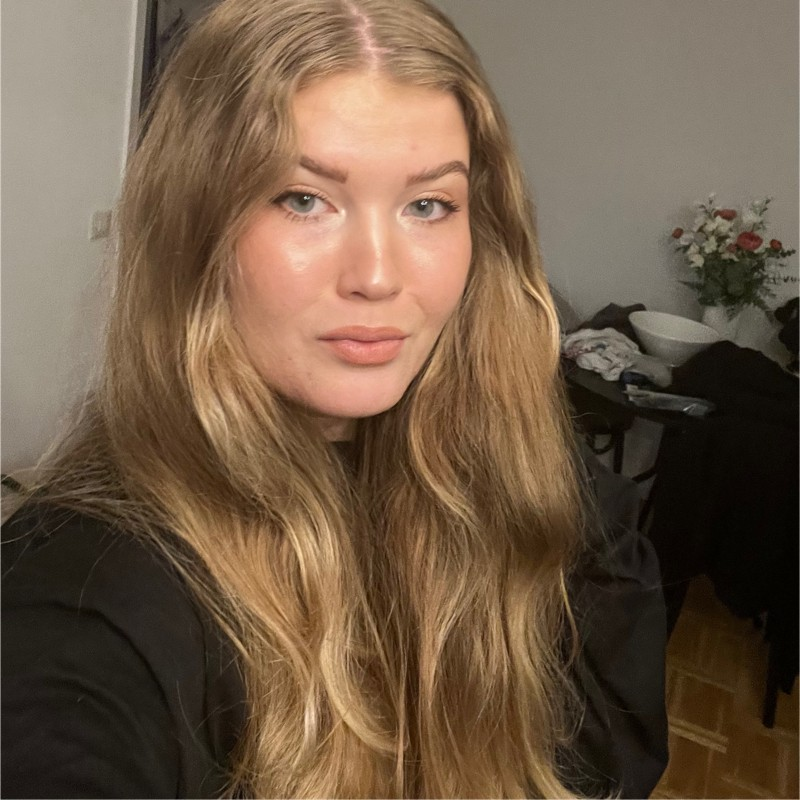

Mitt namn är Filippa Söderlund och är 22 år gamal. Jag pluggar just nu på Mediainstitutet till Front-End utvecklare. Utöver att studera jobbar jag som Incident Manager på Apoteket AB på halvtid. När jag inte studerar spänerar jag nästa all övrig tid i stallet med mina två hästar.
Jag är en driven och glad tjej som gärna tar på sig nya prject.
Utbildning
Medieinstitutet
Front-End Utveckling
Efter första året på Medieinstitutet kommer jag ha läst:
- Kompetensportfölj och entreprenörskap
- UX & Usability
- JavaScript Grundkurs och Fördjupning
- API-utveckling
- Grafiska verktyg för gränssittsdesign
- Agilt projektarbete
- Arbetsmetodik för utvecklare
- Testning
- Samt LIA oh examensarbete
Fredrika Bremer Gymnaserna
Teknikvetenskap
Utöver dem obligatoriska kurserna som exempelvis matte, teknik, svenska och engelska har jag även läst gymnasikurser, psykologi 1 och 2, cad 1 och 2, visuellkomunikation, svets mm.